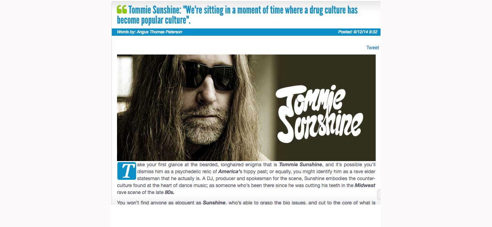

Tommie Sunshine: Unbridled electronic anarchy


With his long hair and scraggly beard, Tommie Sunshine looks every bit the hippie who’s been lifted straight out of 1967 San Francisco, and he carries an anti-authoritarian stance that matches this image in every way. If the counter culturalists back then were pushing the boundaries back then with a hazy, dope-inspired brand of psychedelic rock, then Tommie is pushing is them now with some of the most bugged out, glitchy electronic noise that the underground dance scene has to offer. We’re talking fidgety rhythms, raucous electro, bleepy electronic sounds and plenty of feedback. Basically, the underground is making noise and they’re making lots of it.
As Tommie readily points, when the world goes crazy we see it reflected in the artistic output of those who find themselves a little (or a lot) left of the mainstream; be it with books, film, blogs or the sort of dancefloor mayhem that he’s pushing himself. “When the world is falling apart as I have been speaking about for years now, the music that people run towards to escape in has to be more fucked up than the world that surrounds them. This music we are now dancing to says this exactly without words.” ITM’s Angus Paterson chats with the bearded, anarchic Tommie Sunshine, one of the biggest characters in dance, to mark start of his tour with Stereosonic.
Hi Tommie, this is Angus from inthemix in Australia. How’s it going?
Just back from dates in Europe playing alongside Crookers, Digitalism, Drums Of Death, Les Petits Pilous and Nic Sarno.
Whereabouts are you in the world at the moment? It’s Wednesday before the Stereosonic tour starts I know you’ve got your first gig in Brisbane on Saturday, I thought you might have already made the big flight over.
Back in Brooklyn for less than 24 hours then off to your country.
First up, it hasn’t really been that long since you’ve been in Australia as you’re been such a regular visitor to our shores. How has 2008 been going for you?
I was just there in January of ‘08, but that is long enough to be away from you guys. This year has been my busiest yet and things keep getting crazier!
You’ve always been a big advocate of electronic music and how much potential it has. And I think this year has been a really exciting time for dance music with a lot of genre boundaries breaking down. Has it been an inspiring time for you?
I think music is the best it has ever been. With acts like Jack Beats, Russ Chimes, Hannah Holland, Bird Peterson, AC Slater, Udachi, Klaus Hill, Ed Kane, Bass Weazal, Rampage, B. Rich, Mikix The Cat, Beni and Dances With White Girls, Hostage, Boy 8-Bit, Proxy, Audio Bullys, Mowgli, Sinden, Fake Blood, Heavy Feet, Fukkk Offf, Drop The Lime and anything on Idiot House Records who can complain?
Something that’s just on the horizon for you is the release of your mix CD Relax This Won’t Hurt. I was listening to it this morning and it’s a really healthy mix of electro, some sort of French sounding stuff and a lot of really twitchy stuff too. Was there any mission statement you had in mind with this CD, or was it just a matter of selecting some upfront tunes?
The vision came from how fucked up America has made the rest of the world. The music is hard and I feel times are hard so it is a mirror of these things. The artists I put in the mix are the ones I feel the strongest about and that I could actually license. I tried to get so many tracks I couldn’t because labels know they have the hot shit and aren’t willing to share it. I tried for a dozen Herve tracks and hit brick walls at every label. Fake Blood was the same story. I also wanted an A1 Bassline track that I love but all these new ways of doing music business have lots of glitches in them and these are but a few examples.
You really seem to be embracing the really glitchy, noisy side of what’s out there at the moment. Is there something that you really dig about I guess the headfuck of a lot of underground dance we’re hearing at the moment?
When the world is falling apart as I have been speaking about for years now, the music that people run towards to escape in has to be more fucked up than the world that surrounds them. This music we are now dancing to says this exactly without words.
There’s actually some really creepy cover art of some guy getting strangled with a plastic bag. What’s the story with that?
Actually, it is a woman and the artwork on my album was created by my muse and lover, Daniela M. I believe her artwork says even more about the times than my music choices do. She inspires me to push things even farther out of bounds.
Something that’s interesting for me is that when I think of Tommie Sunshine, there’s quite a diversity to your musical identity. On one side you’ve done a fair amount of work that’s very accessible, a lot of your rock remixes for example. On the other hand you’re definitely into the darker, more underground side of dance music.
The most subversive thing any artist can do is to get invited to the “mainstream” party and never lose the edge you earned over time. If you can use and apply what you learn in the underground and put that in a ‘pop’ context you have accomplished more than most ever get the chance to. I love all sides to art and music and I am very lucky to have fingers in so many pies.
There’s a fairly healthy Australian connection with Tommie Sunshine, and something else that’s happened recently is you’ve hooked up and collaborated with Aston Shuffle. They’re one of the biggest things in Australian dance music at the moment, and I imagine you’d see fairly eye to eye with them musically?
The first Aussies I admired were Acid Jacks and Harris Robotis for their individuality and insane fearlessness. I spent time in the studio with Sam La More, TV Rock and Dirty South but time got the best of those projects and sadly they will probably never see the light of day. I am very pleased with Stomp Yo Shoes and there is already talk of a follow up Aston Shuffle/Tommie Sunshine collaboration.
Something that you’re really well known for is being somewhat of a go-to guy when it comes to remixes. And checking out what you’ve done recently, you were commissioned to do was the new Britney Spears single.
I commissioned myself to do that one; it’s a bootleg! However, I have two new original tracks in the works, one with Mark Palgy (bass player for VHS or Beta) and another with the Lady Tigra. Brooklyn Fire is a new artist name I am birthing and the first release will be Brooklyn Fire vs. LA Riots. I have also begun a new remix phase using Class Of ‘89 as the moniker. Moby, MSTRKRFT, Paradise Is Now, Crookers, Larry Tee feat. Perez Hilton, HEARTSREVOLUTION and Young MC are the first of the new bunch. I also just completed an insane remix of Audio Bullys with Udachi for Southern Fried in the UK. Furthermore I have done vocals for The Love Supreme, Malente, Riva Starr and will soon be collaborating with Tube & Berger and Don Diablo. Sleep is at a premium these days.
Thanks Tommie! Just give us a heads up on what we can expect from your sets on the Stereosonic tour.
Loud, fast, hard, bassline rave rhythms.
Catch Tommie Sunshine making plenty of noise playing on the Stereosonic tour around the country…
Sat Nov 22 – Stereosonic, Brisbane
Fri Nov 28 – Stereosonic pres. satellite v4.0, Sydney
Sat Nov 29 – Stereosonic, Melbourne
Sat Nov 29 – Stereosonic, Adelaide
Sun Nov 30 – Stereosonic, Perth
For all the latest on the Stereosonic tour head to the inthemix festival page, with news updates, interviews, DJ mixes, videos and heaps more!.